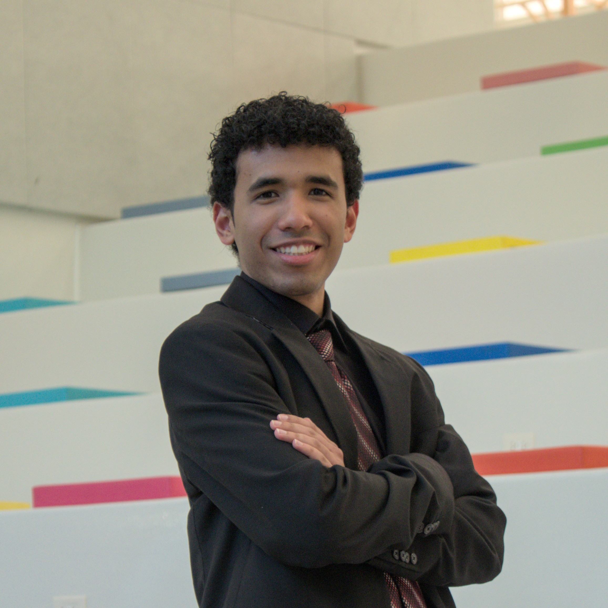

I'm Leonardo, and I'm a fourth-year Applied Mathematics major at Illinois Tech in Chicago. My hometown is Chitré, Panama.
I'm interested in humanitarian operations, more concretely, how to coordinate several independent agencies with local information to achieve better service coverage. I developed these interests through my work with the St. James Food Pantry and my time at the Santa Fe Institute. See the Research tab for more details.
I'm involved with mathematical Olympiads. I'm a former contestant for the Panama IMO team, and I teach contest math to students in the Panamanian training program.
As a fun fact, my Erdős number is 3.